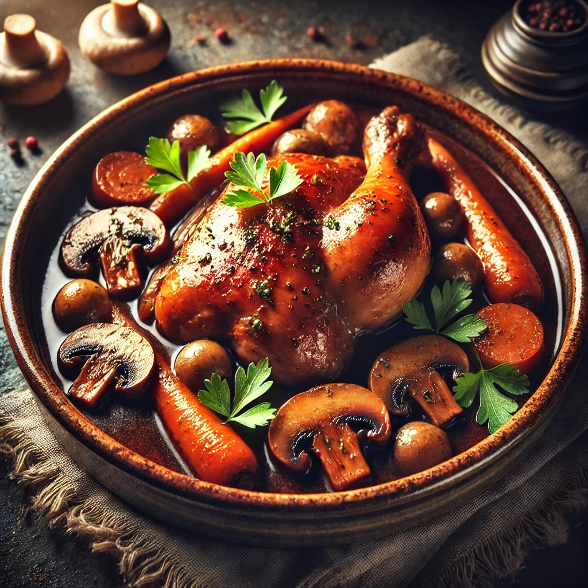
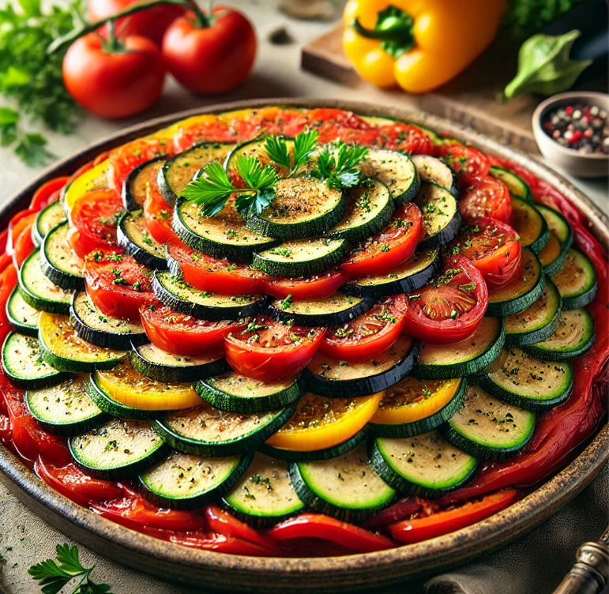

Trouvez vos recettes de plats célèbres
Recette de Croissant

Ingrédients :
- 1 tasse de farine tout usage
- 1/4 tasse d'eau tiède
- 1/4 cuillère à café de levure sèche active
- 1/4 cuillère à café de sucre
- 1/4 cuillère à café de sel
- 1 cuillère à soupe de beurre non salé, ramolli
- 1/2 tasse de beurre non salé, refroidi et coupé en cubes de 1 cm
- 1 gros œuf, battu
Instructions :
- Préparer la pâte : Mélangez la farine, la levure, le sucre, le sel et le beurre ramolli. Ajoutez l'eau tiède et pétrissez jusqu'à consistance lisse. Laissez reposer 1 heure.
- Préparer le beurre : Entre deux papiers cuisson, aplatissez le beurre refroidi jusqu'à obtenir une épaisseur de 5 mm. Réfrigérez.
- Laminez la pâte : Étalez la pâte, ajoutez le beurre, pliez et réfrigérez. Répétez 2 à 3 fois.
- Façonner les croissants : Étalez la pâte, découpez en triangles et roulez. Laissez lever 1 heure.
- Cuire : Badigeonnez d'œuf battu et enfournez à 190°C pendant 15 à 20 minutes. >
- 1 poulet de 1,5 kg, découpé en 8 morceaux
- 1/2 tasse de farine tout usage
- 1/4 tasse d'huile d'olive
- 1 gros oignon, haché
- 4 gousses d'ail, émincées
- 1 tasse de vin rouge sec
- 1 tasse de bouillon de poulet
- 1 cuillère à soupe de concentré de tomate
- 1 cuillère à café de thym séché
- 1/2 cuillère à café de sel
- 1/4 cuillère à café de poivre noir
- 12 petits oignons perlés, pelés
- 12 petites carottes, pelées et coupées en morceaux de 2,5 cm
- 12 petits champignons, nettoyés
- 1/4 tasse de persil frais haché
- Préparer le poulet : Assaisonnez les morceaux de poulet avec du sel et du poivre. Enrobez de farine et secouez l'excès.
- Faire dorer le poulet : Chauffez l'huile dans une cocotte et faites dorer le poulet sur tous les côtés. Retirez et réservez.
- Sauter les légumes : Ajoutez l'oignon et l'ail et faites cuire jusqu'à ce qu'ils soient tendres, environ 5 minutes. Ajoutez le concentré de tomate et faites cuire 1 minute.
- Déglaçage : Versez le vin rouge et grattez le fond de la cocotte. Portez à ébullition, puis réduisez le feu et laissez mijoter 10 minutes.
- Ajouter le poulet et les légumes : Remettez le poulet dans la cocotte avec les oignons, les carottes, les champignons, le bouillon de poulet, le thym, le sel et le poivre.
- Cuire et épaissir la sauce : Couvrez et laissez mijoter 1h30 à 2 heures. Retirez le poulet, réduisez la sauce si nécessaire, puis remettez le poulet et servez.
- 1 grande aubergine, coupée en dés
- 2 courgettes, coupées en dés
- 2 poivrons, coupés en dés
- 4 tomates, coupées en dés
- 1 gros oignon, coupé en dés
- 4 gousses d'ail, émincées
- 1/4 tasse d'huile d'olive
- 1 cuillère à soupe de concentré de tomate
- 1 cuillère à café de thym séché
- 1 cuillère à café d'origan séché
- 1/2 cuillère à café de sel
- 1/4 cuillère à café de poivre noir
- 1/4 tasse de basilic frais haché
- Faire revenir les légumes : Chauffez l'huile d'olive dans une grande poêle à feu moyen. Ajoutez l'oignon et l'ail et faites-les cuire jusqu'à ce qu'ils soient ramollis, environ 5 minutes.
- Ajouter l'aubergine : Ajoutez l'aubergine coupée en dés dans la poêle et faites-la cuire jusqu'à ce qu'elle soit ramollie, environ 10 minutes.
- Ajouter les légumes restants : Ajoutez les courgettes, les poivrons et les tomates. Faites cuire jusqu'à ce que les légumes soient tendres, environ 15 minutes.
- Assaisonner la ratatouille : Ajoutez le concentré de tomate, le thym, l'origan, le sel et le poivre. Faites cuire encore 5 minutes.
- Finir le plat : Retirez la poêle du feu et incorporez le basilic frais. Servez la ratatouille chaude ou à température ambiante.
- 1 fond de tarte de 9 pouces, non cuit
- 6 tranches de bacon, cuites et émiettées
- 1 tasse de Gruyère râpé
- 4 gros œufs
- 1 tasse de crème épaisse
- 1/2 cuillère à café de sel
- 1/4 cuillère à café de poivre noir
- 1/4 cuillère à café de noix de muscade moulue
- Préchauffer le four : Préchauffez le four à 190°C (375°F).
- Préparer le fond de tarte : Placez le fond de tarte dans un moule à tarte de 9 pouces. Repliez les bords selon votre préférence.
- Disposer la garniture : Saupoudrez le bacon et le fromage Gruyère au fond du fond de tarte.
- Préparer la crème : Dans un bol, fouettez les œufs, la crème épaisse, le sel, le poivre et la muscade.
- Verser la crème : Versez la crème sur le bacon et le fromage dans le fond de tarte.
- Cuire la quiche : Faites cuire la quiche pendant 35-40 minutes, jusqu'à ce que la crème soit prise et le dessus doré.
- Refroidir et servir : Laissez refroidir la quiche pendant 10 minutes avant de la couper et de la servir.
- 1 tasse de farine tout usage
- 1 1/2 tasses de lait
- 2 gros œufs
- 2 cuillères à soupe de beurre fondu
- 1/4 cuillère à café de sel
- 1 cuillère à soupe de sucre
- 1 cuillère à café d'extrait de vanille
- Préparer la pâte : Dans un blender, mélangez la farine, le lait, les œufs, le beurre, le sel, le sucre et la vanille. Mixez jusqu'à obtenir une pâte lisse.
- Reposer la pâte : Laissez la pâte reposer pendant au moins 30 minutes, ou jusqu'à une nuit au réfrigérateur.
- Cuire les crêpes : Chauffez une poêle antiadhésive à feu moyen. Versez 1/4 tasse de pâte dans la poêle et tournez pour enrober le fond uniformément. Faites cuire 1-2 minutes, puis retournez et faites cuire encore 30 secondes.
- Garnir et servir : Garnissez les crêpes avec vos garnitures sucrées ou salées préférées, comme Nutella, fruits, ou jambon-fromage. Pliez ou roulez les crêpes et servez chaud.
- 4 tasses de farine de pain
- 2 1/4 cuillères à café de levure sèche active
- 2 cuillères à café de sel
- 1 1/2 tasses d'eau tiède
- Préparer la pâte : Dans un grand bol, mélangez la farine, la levure et le sel. Ajoutez l'eau tiède et mélangez jusqu'à obtenir une pâte hirsute.
- Pétrir la pâte : Placez la pâte sur une surface farinée et pétrissez jusqu'à ce qu'elle soit lisse et élastique, environ 10 minutes.
- Laisser lever la pâte : Placez la pâte dans un bol graissé, couvrez avec un torchon humide, et laissez lever jusqu'à doubler de volume, environ 1 heure.
- Façonner la baguette : Dégonflez la pâte et formez un long pain mince. Placez-le sur une plaque à pâtisserie tapissée de papier sulfurisé.
- Laisser reposer la baguette : Couvrez la baguette avec un torchon humide et laissez lever pendant 30 minutes.
- Cuire la baguette : Préchauffez le four à 230°C (450°F). Incisez le dessus de la baguette avec un couteau aiguisé et faites cuire pendant 20-25 minutes, jusqu'à ce qu'elle soit dorée et qu'elle sonne creux lorsqu'on tape le fond.
Dégustez vos croissants faits maison !
Recette de Coq au Vin
Ingrédients :
Instructions :
Dégustez votre Coq au Vin !
Recette de Ratatouille
Ingrédients :
Instructions :
Bon appétit avec votre Ratatouille !
Recette de Quiche Lorraine
Ingrédients :
Instructions :
Bon appétit avec votre Quiche Lorraine !
Recette de Crêpes
Ingrédients :
Instructions :
Bon appétit avec vos crêpes !
Recette de Baguette
Ingrédients :
Instructions :
Bon appétit avec votre baguette !